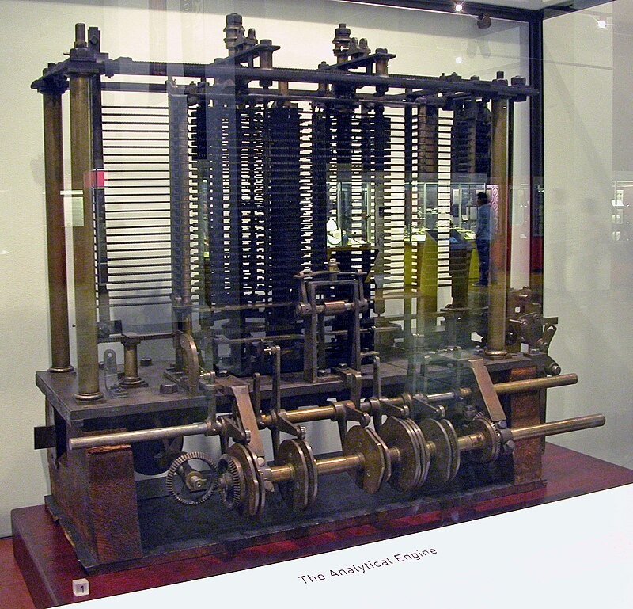

LA STORIA DELL'INFORMATICA

La macchina analitica è stato il primo progetto di un computer meccanico sviluppato per eseguire compiti generici.
Lo schema teorico di questa macchina è universalmente riconosciuto come il primo prototipo di calcolatore generico complesso.
È infatti basato su un sistema di input, un sistema per l'elaborazione dei dati con un dispositivo chiamato "Mill" (mulino), e un sistema di output, lo stesso schema che verrà usato più di un secolo dopo nei laboratori statunitensi per creare il primo computer.
La macchina analitica doveva essere alimentata da un motore a vapore e doveva essere lunga più di 30 metri per 10 metri di profondità. I dati d'ingresso e il programma sarebbero stati inseriti tramite schede perforate,
I dati di uscita sarebbero stati prodotti da uno stampatore e da un arco in grado di tracciare curve.
La macchina sarebbe stata in grado di perforare delle schede per memorizzare dei dati da utilizzare successivamente.
La macchina utilizzava un'aritmetica in base 10 a virgola fissa. La memoria interna sarebbe stata in grado di contenere 1000 numeri di 50 cifre. La componente "Mill", che costituiva l'idea di base dell'unità aritmetica e logica presente nelle moderne CPU,
sarebbe stata in grado di svolgere le quattro operazioni aritmetiche.